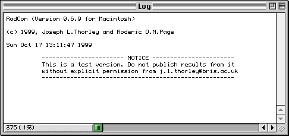
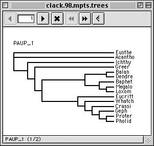
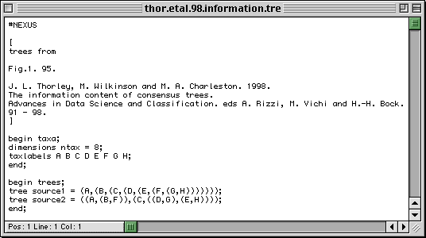

There are three types of window in RadCon.
The Log window provides the user with information.
An Edit window allows the user to edit text files
A Trees windows allows the user to view a set of trees.
Although RadCon allows multiple windows to be open only one of them can be the active window - the window on whose associated contents any choosen menu command operates.
The active window is easily identified it is the front window and a tick occurs next to its name in the list of windows in the Window menu. The active window can be changed by selecting it in the Window menu or by clicking on the window the user wishes to become active.
The Log window is a text window to which RadCon writes information for the user.

Although the contents of this window cannot be directly edited they can be saved to a text file for subsequent editing or inclusion in a document. The Save As Edit menu command saves the current contents of the Log window to a text file. However, there is an upper limit on the memory of the Log window and if this is exceeded any new text overwrites the oldest text in a process known as wrap round. Wrap round means that text of interest to the user may have been overwritten by the output of subsequent commands (or even the same command). The Log Output To Disk File menu command overcomes this problem by saving the the contents of the Log window, to a text file specified by the Output File... File menu command, as the text is written to the Log window.
The Log window uses the font defined by the
 PAUP Font File. If this is not
installed a different font is used and the contents
of the Log window are incorrectly displayed.
PAUP Font File. If this is not
installed a different font is used and the contents
of the Log window are incorrectly displayed.
The Trees window allows the user to view a set of trees

The tree displayed in a Trees window can be changed using the buttons in the toolbar.Click on a button in the toolbar to get more information.
The Trees window toolbar provides the user with various button controls.
The back button causes the window to display the previous tree in the set.
The edit bar displays the number of the tree currently being displayed in the window. Manually edit the number to go to a specific tree.
The forward button causes the window to display the next tree in the set.
The select button causes the tree which is currently being displayed to be selected or deselected.
The fast back button causes the window to display the previous selected tree in the set.
The fast forward button causes the window to display the next selected tree in the set.
The tree drawing button causes the trees to be drawn as slanted or rectangular.
The Edit window allows the user to manually edit a text file.

The Edit menu includes basic text editing commands.
Go to the Table of Contents.
This page is maintained by joe@poissonconsulting.ca
© Copyright 1999, 2000, 2001, Joseph L. Thorley and Mark Wilkinson. All rights reserved.